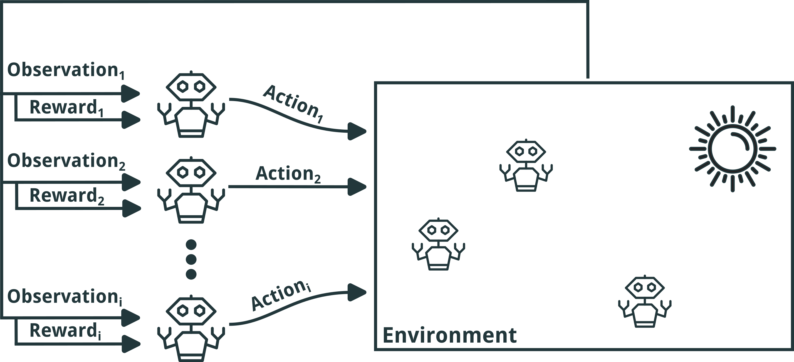
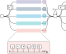
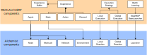
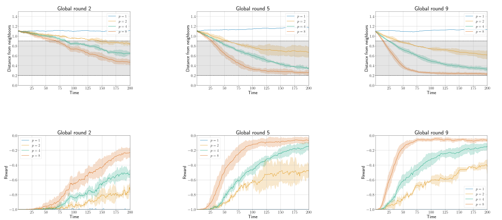

A Reusable Simulation Pipeline for
Many-Agent Reinforcement Learning
Davide Domini, Gianluca Aguzzi , Danilo Pianini, Mirko Viroli
International Symposium on Distributed Simulation and Real Time Applications @ DSRT 2024

Many-Agent Reinforcement Learning
MARL Examples


Motivation
- Challenges in Multi-Agent Reinforcement Learning (ManyRL):
- Decentralized decision-making processes lead to complex system dynamics
- Emergent behaviors arise from interactions among numerous autonomous agents
- Limitations of Real-World Learning:
- Impractical due to high costs, time constraints, and legal/physical restrictions
- Advantages of Simulation in ManyRL Research:
- Enables scalable training of ManyRL algorithms in a controlled, safe, and cost-effective environment
- Facilitates exploration of diverse scenarios, fine-tuning of policies, and evaluation of system robustness before real-world deployment
- Existing Simulators:
- Platforms like PettingZoo and Gazebo are designed for small-scale scenarios
- They lack scalability and configurability, which are critical for addressing ManyRL challenges
Comparison with exisisting solutions
| Simulator | Configurability | Lifecycle Management | Experience Extraction | Scalability | Distributed Execution | Deep Learning Integration | |
|---|---|---|---|---|---|---|---|
| General Purpose | NetLogo | ✔ | / | / | ✗ | ✗ | ✗ |
| MESA | ✔ (Modular) | / | / | ✔ | ✔ | ✔ | |
| Sibilla | ✔ (Multiple Specs) | ✔ | / | ✗ | ✗ | ✗ | |
| Alchemist | ✔ | ✔ | ✔ | ✔ | ✔ | ~ (With ScalaPy & GraalPy) | |
| Swarm Robotics | ARGoS | ✔ (Limited for MARL) | ✔ | ✔ | ✔ | ✗ | ✗ |
| Gazebo | ✔ | ✔ | ✔ | ✗ | ✔ | ✗ | |
| Kilombo | ✗ | ✔ | ✔ | ✔ | ✗ | ✗ | |
| MARL | PettingZoo | ✔ (Via Environments) | ✔ | ✔ | ✗ | ✗ | ✔ |
| Unity ML-Agents | ✔ | ✔ | ✔ | ✗ | ✗ | ✔ | |
| Neural MMO | ✔ (Task-Specific) | ✔ | ✔ | ✔ | ✗ | ✔ |
✔ Yes
~ Partially, using third-party tools
/ Limited
✗ No
Pipeline Architecture
- Current observation $\rho$
- Action computation $\gamma$
- Environment interaction $\theta$
- Next observation $\rho_\mathcal{+}$
- Collective reward computation $R$
- Experience storage $\mathbb{E}$

MARLAlchemy Prototype
Experimental Evaluation: Scenario
- Experiment on multi-agent flocking behavior : agents must learn to move while maintaining cohesive groups and avoiding collisions
- Cohesion among agents is defined by two hyperparameters $\delta_U$ and $\delta_L$ (target distance range an agent aims to maintain from its neighbors)
- The observation space for each agent is defined as the relative distance vector to its neighbors: $\mathcal{O} =$ { $( x_i - x_j, y_i - y_j ) \mid j \in \mathcal{N}_i$ }
- Each agent is rewarded if the maximum distance $d$ to its neighbors is within a range $]\delta_L, \delta_U [$, and it is penalized otherwise: $\mathcal{R} = 0 \text{ if } \delta_U < d < \delta_L, \text{ otherwise } -1$


Experimental Evaluation: Setup
- Training algorithm: Conservative Q-Learning
- $9$ global training rounds followed by $1$ evaluation round
- Each global round consisted of one or more simulations, depending on the level of parallelism $p$ ( $p \in$ { $1,2,4,8$ } )
- Each simulation consisted of $200$ episodes
- Quality metrics:
- Average distance of the agents from their neighbors
- Value of the reward function $\mathcal{R}$
- All the experiments are publicly available and reproducible
Results

Visualizing a Simulation

What’s next?
- Integration of additional learning algorithms
- Evaluate the pipeline on a wider range of many-agent learning scenarios
- Integrate the pipeline within the main Alchemist distribution